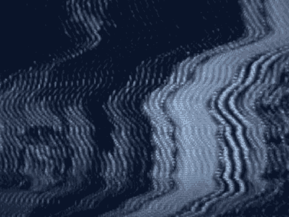

11 really be clear on which type of association or which
12 particular association the Court was instructing them to deal
13 with.
14 THE COURT: Denied.
15 MR. WILFORD: All right. Also, in that same section,
16 your Honor, and this is overall to most of the remaining
17 counts in which the Court instructs on Five and Six, as an
18 example, 283 and 284, the Court instructs the jury to
19 consider -- not on this particular page, your Honor, but this
20 particular section of the charge, when you are talking about
21 Counts Five and Six, which begins on page 72, and you talk in
22 that instance, you talk about Mohamed Sadeek Odeh and Mohamed
23 Rashed Daoud Al-'Owhali, and also in Count Six, Khalfan Khamis
24 Mohamed, because the elements are the same, the Court has
25 grouped in a section both, all three of these particular
5193
1 defendants.
2 However, because of the difference in proof that has
3 been adduced at trial, the fact that Mr. Odeh has nothing to
4 do whatsoever with anything in Tanzania, I think that it adds
5 some confusion for the jury and what we are requesting is that
6 it be a separate section charging the Kenyan events as opposed
7 to having them both together. I understand, I think, what the
8 Court was trying to do was to shorten and have the jury
9 consider those groups of elements or that group of elements
10 for those particular crimes, but what it does do --
11 THE COURT: I understand what you are saying, but I
12 think it sets out the legal principles, which are the same,
13 and then it very clearly indicates which counts are Kenya and
14 which counts are Tanzania, looking at the first full paragraph
15 on page 75, and any danger, I think, of that is dissipated by
16 the structure of the special verdict form.
17 What I usually do is I go back and forth. When I
18 complete a count, I will then say, "Now turn to the special
19 verdict form and you will see..." So I don't think that's
20 worth regurgitating the same.
21 MR. WILFORD: Thank you, Judge.
22 MR. FITZGERALD: Your Honor, the only other comment
23 the government had that's not tied to a particular page but we
24 thought maybe might be appropriate around page 81 was to
25 suggest the possibility of a conscious avoidance charge on the
5194
1 substantive bombings, and the reason I suggest that is looking
2 ahead specifically with regard to the Odeh case and the
3 bombing, there was some discussion during the Wahhaj testimony
4 about whether he inquired about what others were up to, but I
5 could easily foresee the way the summations might play out
6 that there may be an argument by the government that he can't
7 be in the middle of things and, pardon the expression, but
8 "stick his head in the sand."
9 THE COURT: Like an ostrich. I was thinking about
10 all our ostrich discussion, that we'll not be able to get
11 through closing statements without somebody making the analogy
12 to ostriches.
1